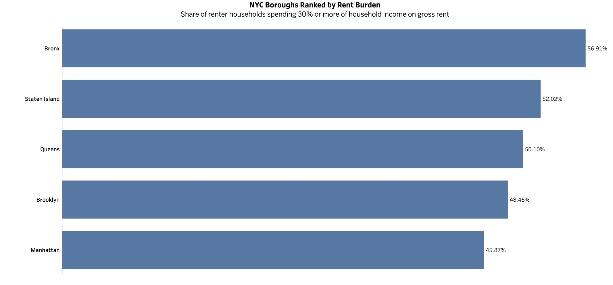
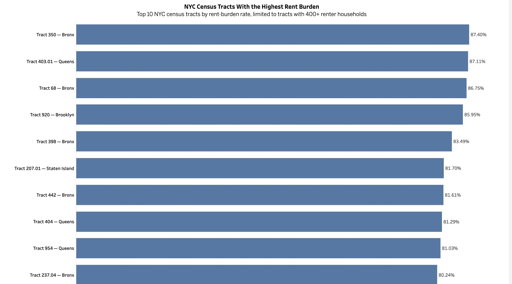

Housing affordability · Census data
NYC rent burden
analysis
How housing affordability varies across New York City.
Introduction
Where is rent burden most concentrated across the city?
As a New Yorker, housing affordability is something I see affecting people around me every day. I wanted to look beyond the conversations around rising housing costs and explore what the data actually shows across New York City.
Using 2024 U.S. Census Bureau data, I analyzed rent burden, which measures households spending at least 30% of their income on gross rent.
1 · Borough comparison
The Bronx has the highest rent burden in NYC

Housing across the city
Rent burden is a citywide issue, but the level of impact varies by place.
2 · Geography
The geography tells another part of the story
Looking at the same numbers geographically makes the differences across the city easier to see.
Loading borough map…
Hover over a borough to view details.
The borough map shows broad patterns of rent burden, but boroughs are large and diverse. A single borough-wide percentage can hide substantial differences between smaller areas.
That led me to look deeper.
3 · Census-tract detail
Zooming in reveals much larger disparities
I analyzed NYC at the census-tract level, allowing me to examine much smaller geographic areas within each borough.
To avoid rankings being dominated by very small populations, I focused on census tracts with at least 400 renter households.
Loading census tract map…
Hover over a census tract to explore local rent burden.
At this level, the differences become much more pronounced.
While the highest borough-wide rate was 56.9%, some individual census tracts had rent-burden rates exceeding 80%.
4 · Highest-burden tracts
In some areas, more than 8 in 10 renters are rent-burdened

5 · Looking beyond the average
Changing the geographic level changes the story
This project started with a simple question about rent affordability in NYC, but the most interesting finding came from changing the geographic level of the analysis.
Borough averages helped show where rent burden was generally higher, while census-tract data revealed how unevenly that burden can be distributed within the city.
For me, it was also a way to use data to better understand an issue I see in the city around me.
Project resources
Explore the rent-burden analysis.
View the interactive dashboard or review the SQL workflow behind the analysis.
Data source: U.S. Census Bureau, American Community Survey 2024 5-Year Estimates, Table B25070.